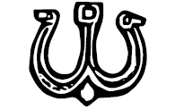

Bu herkesi şaşırtan ve derinden etkileyen dönme olayından birkaç ay sonra, kışın ortası olmasına karşın, sağa sola ve söz verilmiş topraklara gönderdiğimiz çaşıtlar da birer birer döndü. Hepsini birden dinlemek için büyük tören otağımı Cend’in hemen dışına kurdurdum. Çevresine irili ufaklı kar kesekleri dizdirdim. Soğuğu biraz kestim. İrili ufaklı bütün beylere, aksakallara, önde gelen kocalara, il ağalarına haber ettim. Otağ tıklım tıklım doldu. Çocukluğumuzdan beri büyülü öyküleriyle büyüdüğümüz kutsal toprakları çok merak ettiğimizden, oradan başladık. Oraya giden adamımız, Başrav’ın yeğeni Barçın Rehoboam, bir sarıklı cüppeli amcasına, bir abalı kebeli bizlere küçükdilini yutmuş gibi bakıyor, söze nasıl başlayacağını bilemiyordu. Yoksul yiğit anlamaya çalışıyordu. Ne olmuştu? Arada hepimiz Müslüman mı olmuştuk? O zaman ne diye yalnızca amcası Arap kılığına girmişti? Önümde yer öpmeye yatmış, bir türlü dizlerinin üstüne gelememişti. İşaret ettim. Ağalar koltuklayıp kaldırdılar.
Şaşkın, bezgin yiğit sözünü hiç eğip bükmedi:
“Han’ım, başka ülke mi yok?”
Otağdan bir uğultu yükseldi. Barçın, önce titrek, sonra gittikçe kendini bulan bir sesle sürdürdü:
“Han’ım, budun, duyun, işitin! Keçileri, koyunları tavşan kadar. Tavşanları ise sıçana benziyor. Değil ırmaklardan süt akması, ineklerinin bile memelerinde süt yok! Zaten ortada ırmak da yok! (Uğultular yükseliyor.) Gelenektir, benim ilk aliyahımdır diyerek Yeruşalayim’de kent kapılarını öptüm, Yahudi dahil her dinden adam, delirmişim gibi baktı. Yürüdüm, ıraktan kubbesi altın gibi parlayan Solomon Yalvaç’ın tapınağını yakından gördüm. Kubbesi gerçekten altınmış, katı bildim. (Birinci İsrailcilerden yaşa var ol sesleri...) içine girmeye uğraşırken Yahudi’yim diye almadılar. (Niye, niye sesleri...) Meğer Solomon Yalvaç’ın tapınağı bir alttaymış! İri, büyük, kesme taşlardan başka bir şeyi kalmamış! Önünde durdum, çok ağladım. Sonra yukarı kuzeye çıktım. Safed denen köyde İdil, Babil ve Roma sürgünlüklerinden arta kalmış dindaşlarımızı gördüm. Hepsi artık Arapça konuşuyor. Sabun ve cam eşya yapımında çalışıyorlar. Hazar Kağanlığı’na göç etmek istediklerini söylediler! (Sürekli uğultular...) Sarkel’in, İdil’in yakıldığını, kağanlığın renklerinden birini yitirdiğini, yalnızca Akhazarların burada toplandığını söyledim, durumu anlamak için bir çaşıt göndermeye karar verdiler. (Şiddetli uğultular...) Gözünü dört aç budun, çaşıtın Iraklı bir Arap tacir kılığında gelmesi yakındır! (Şiddetli kahkahalar...) Yalnız, Han’ım, Negev Çölü’nde sıcakta çok dolaşınca gerçekten birkaç manna bulunabiliyor. (Ooo sesleri...) Ben yine de yemeyelim derim. (Niye, niye sesleri...) Çünkü budun, bunların güçlü arka bacakları var, büyük zıplamalar yapabiliyorlar, sıcakta yakalamak güç ve tatları kötü! Han’ım, Tanrı seçilmişlere niye bu kurak, küçük ülkeyi verdi? Ben yoksul anlamadım! (İkinci İsrailciler tarafından sürekli alkışlar...)
Sonra sıra, birkaç gün önce Urum’dan gelen, fakat benim beklettiğim çaşıttaydı. Birinci İsrailciler adamın dediklerinde bir yanlış bulmak için kulak kesilmişlerdi. Herkesi susturdum. Çaşıt, eski başravlardan Benyamin İncirin, Tuğak’ın gece karavaşından olma, saklı oğlu Frenk İncirdi. Kısaca buyurdum:
“Söyle oğlum, nedir Urum’da durum?”
Derin bir iç geçirdi. Dalgın gözlerle, duygulu bir sesle konuşmaya başladı:
“Han’ım, budun, duyun, işitin! Ah Urum, Urum, seni seviyorum, sevmek ne söz, sana tapıyorum, çığlıklar atıyorum, duymuyorsun! Şendedir her türlü güzellik, şendedir hava, sendedir su. (Uğultular, yansızlık yansızlık, diye cılız sesler...) Sendedir göğsü kaba yahşi ala dağlar, sendedir üstü köpüklü serin sular! (Yavaş, serin gel sesleri...) Doğu’ya karşı Batı mısın? Batı’ya karşı Doğu musun? Yol musun, yolak mısın? Bazen bozkır, bazen sulak mısın? Senin yanında her yer ömür törpüsü. Urum! Urum! Sensin değişik budunlar arasında geçiş köprüsü! (İkinci İsrailcilerden utangaç alkışlar...) Han’ım, bomboş bir ülke. Tanrı sizi inandırsın, Mazgirt diye bir kale yıkıntısı yakınlarından girdim, Üsküdar diye bir kentin içinden çıktım. Tam iki ay at sürdüm, güzelim ülkede Tanrı’nın bir kulunu görmedim. (Yalan, yalandır sesleri...) Taa Kızılelma’ya, Konstantin’in kentine dek gittim. Ulu bir kaledir, yanında Sarkel ile İdil neylesin? Ayasofya’sını görmeyen, bu acunda bir şey gördüm demesin, (ikinci İsrailcilerden yoğun alkışlar...) Üç yanı denizdir, bir yanı kara, çevresi bütün kalın surdur! (Ooo sesleri...) Surun üstünde kamu dilberler durur, durur da kirpikleri nice eri vurur. (Kalkın uşaklar sesleri...) Urum, Urum, ah adı görklü, kendi güzel Urum! Han’ım, budun, işte duydun, budur, böyledir durum. (Birinci İsrailcilerin dövülerek otağdan atılması ve ara.)”
Beyler, budun ve ailem, Tengereliler, hepsi bir Urum aşkına düşmüşlerdi. Çin taraflarına gönderdiğim çaşıtı şöyle utanma pazarı, bir dinlediler. Gereğinden çok kalabalık bir ülkeye pek ilgi gösteren olmadı. Hazar’a gidip dönen yoksulu ise hiç konuşturmadılar. Hakları da yok değildi. Tekparmakhos’tan öğreneceğimizi öğrenmiştik. Kara kara düşünmeye başladım. Birinci İsrailciler fena yitirmişlerdi davayı. İkinci İsrailciler büyük bir utku kazanmışlardı. Karar verilmiş gibiydi. Ravlar bile “Urum da Urum, Urum’a gitmek istiyorum” diyor, başka bir şey demiyorlardı. Yirmi yıldan fazla budunu “Urum, Urum” diye dizlerimde sallamıştım; uyumuşlardı belki, ama düşleri hep Urum’la dolmuştu. Hepsinin gönlüne Urum ateşi düşmüş, sönmek bilmiyordu.
O akşam yanıma hiç kimseyi almayarak atıma atladım, Cend çevresinde küçük bir geziye çıktım. Karların içinde tatsız tuzsuz dolaştım, bata çıka biraz debelendim. Şu kızıp sövdüğüm karlar aslında durumu biraz kurtarıyor, bana zaman kazandırıyordu. Kışın bu azgın günlerinde hiç kimsenin Urum’a gidecek durumu yoktu. Hoş, kimse Urum’a nasıl gidileceğini gerçekten düşünmüyordu. Arada koskoca Horasan, koskoca İran vardı, kimsenin umursadığı yoktu. Benim neredeyse iki yıl önceki din değiştirme önerim şimdi başka bir ışık altında görülüyordu: Budun Müslüman olursa, Müslüman ülkelerin içinden daha rahat geçer, kendisine söz verilen toprağı bulur, barışa huzura erermiş! Urum’a ulaşınca da göstermelik dinini bırakır, atalarının doğru dinine geri dönermiş!
Bunların hepsini öngörmüşüm ben! Maşiah Kağan’ın öngörüsü dillere destan olmuştu şimdi. Hele Urum elçisiyle konuşurken söylediğim sözler! Hepsi Çin işi kâğıtlara yazılmış, elden ele dolaşıyordu. Tengere’nin denizi tükenmiş, artık yatsı olmuş, mumu sönmek üzereydi. Oluşmasına katkıda bulunduğum bu düzenden nasıl kurtulacaktım, nasıl çıkacaktım, bilmiyordum. Kendi ellerimi bağlaya bağlaya bu çıkmaza gelmiş dayanmıştım.